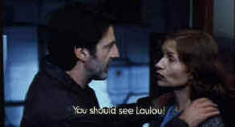

|
La Separation/A-,C |
|
Fox Lorber/1994/85m/WS 1.85 |
|
This is a very powerful film feel dealing
honestly with emotions as a couple plummets into the abyss of a marital break-up. No punches are
pulled. The gut-wrenching dialogue exposes the flaws of the characters as well as their humanity.
All the action in La Separation unfolds with reckless speed. The events seem unstoppable;
the brakes of the characters fail to stem the speed at which it plays out.
 |
|
One of many intimate confrontations ©Fox Lorber |
There is no cut and dry black and white to La
Separation. Marriages and relationships don’t survive on that basis. While Anne may betray
Pierre how has Pierre betrayed Anne in the day to day of living together? Whenever Ann tries to
come closer to Pierre he cannot resist the urge to hurt her, even though he loves her and wants her
more than anything else.
La Separation contains an early movie theater scene that plays
almost perfectly. Anne and Pierre are watching a vintage black and white film starring Ingrid
Bergman and Alexander Knox (Europa ’51). The theater is blessedly silent save for the screen
voices. Pierre places his hand over Anne’s affectionately and then more passionately. Anne pulls
her hand away and turns in admonishing Pierre that she wants to watch the movie. The line of dialog
was unnecessary. The breech of silence in movie scenes set in theaters has always been a pet peeve
of mine and this was so close to getting absolutely right. Close anyway!
Writer/director Christian Vincent pulls no punches. His camera hones in
mercilessly on his players, revealing their flaws and innermost feelings. His actors deliver the
goods in spades. Daniel Auteuil plays out French angst to perfection and Isabelle Huppert gives and
mature and knowing performance.
The
transfer is adequate. There are some soft scenes while others are sharp. It might be the transfer
and it might be the cinematography. There are moments when I would have liked a clearer picture of
characters’ eyes. So much turmoil is going on in the depths of the players, I didn’t want to
miss a bit of emotion. Color is fine and there is no excess of grain. The white subtitles are on
the print and they are always easy to read. This facilitates blowing up the image to fill a wide
aspect ratio screen but many viewers would rather have the titles in the black borders on
letterboxed features. Some find the titles on the image distracting. I can only say the titles
disappeared for me and the characters speak loud and clear. The sound is problematic. There is a
persistent pumping in the background, almost as if one track is unused. There is almost no music in
this film and maybe this is the source of the annoying sound aberration.
|
|
|
Check out the Movie Poster Archive for
short bios and images of Susan Hayward, Kirk Douglas, Katharine Hepburn and many more. This month's
featured star is John Wayne.
The Feature Archive has articles ranging from
Akira Kurosawa
to Blonde Bimbos and John Ford.

Click on the image of The Heistmasters for
an interesting feature on the tough guys that pull off the big jobs. |
|
HOT LINKS
etown.com
Venerable Internet Magazine etown.com is making a big growth spurt adding veteran home theater
writers to their editorial and review staff. Look for many new hardware reviews in the coming
weeks.
Classic Movies
Brad Lang movie site continues to be a great tool for Internet surfers and
movie lovers. As usual, he's found some interesting links. Check out the link for a fine Japanese
site on Kurosawa films.
|
|
Home Theater Reference Reviewing System

When you read a DVD review it's of utmost importance to know what equipment is being used to
evaluate quality. Click on the projectors to find out more. |
| |
|